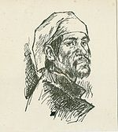

Puerto Rico Encyclopedia
http://www.enciclopediapr.org/
Created and maintained by the Puerto Rican Humanities Foundation.
Reviewed June, 2012.
In 2008, the Puerto Rico Encyclopedia Web site was launched to the public as a bilingual (English and Spanish) educational project of the Puerto Rican Humanities Foundation (fph). Using public and private funding, the fph, a nonprofit institution affiliated with the National Endowment for the Humanities, collaborated with six higher education institutions in Puerto Rico and two in the United States. The site’s team of editors consists of recognized scholars and intellectuals in Puerto Rico. Their goal is to present a wide range of Puerto Ricorelated information, grounded in a humanistic approach and using innovative technology. The main focus is to serve as an information tool for K12 students, people of Puerto Rican descent, and the general public interested in Puerto Rico and Puerto Ricans in the United States.

Miguel Henríquez, Puerto Rican privateer
The
Puerto Rico Encyclopedia presents a variety of perspectives on history, society, and culture. It consists of sixteen sections that combine essays, documents, photos, and videos on subjects ranging from pre-Columbian populations to Puerto Ricans in Florida. Most of the sections highlight cultural and artistic themes through essays on architecture, music, visual and performing arts, literature, and folklore. In the history section, the emphasis on pre-twentieth-century history reproduces a view of history as something from the past disconnected from the present. At the same time, the essays on twentieth-century history are limited to the topics of agrarian reform, the mid-twentieth-century industrialization project Operation Bootstrap, and the 1937 Ponce Massacre. The site could have taken advantage of the vast literature on this period, which is important to understanding contemporary Puerto Rico and Puerto Ricans. The sections on gender relations, emigration, and immigration present new and innovative ways to interpret the Puerto Rican experience. In addition, better bibliographic sources should also be added to some essays, such as the section on fertility, which ignores most of the feminist and political economy literature on the subject.
The presentation of quotes, facts, and trivia is very impressive as are the site design and the photos. The site also has easily navigable galleries with videos, photos, and a map of Puerto Rico containing basic information on each municipality and cultural routes through the islands. Unfortunately, this project is still a work in progress. Some of the subsections lack essays and other sections are very limited in scope. A section on the Caribbean region deviates from the main goal of the site. Finally, the
Puerto Rico Encyclopedia needs a better way to reach out to the public. As a scholar in the field of Puerto Rican studies, I never heard about this site before being presented with the opportunity to review it. One of the reasons behind its lack of public outreach could be the limited network of scholars involved in the project. Nevertheless,
Puerto Rico Encyclopedia represents an important resource for wider public access to scholarly knowledge about Puerto Rico and Puerto Ricans.
Ismael García-Colón
College of Staten Island
City University of New York
Staten Island, New York